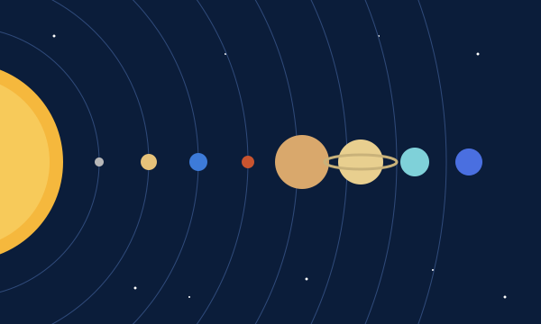

Un recorrido por nuestro vecindario en el espacio

El sistema solar está formado por el Sol, ocho planetas, sus lunas y muchos cuerpos más pequeños que giran a su alrededor.
Es una estrella y contiene casi toda la masa del sistema solar. Su superficie está a unos 5.500 °C y su luz tarda unos 8 minutos en llegar a la Tierra.
Se formó hace unos 4.600 millones de años a partir de una gran nube de gas y polvo. Con el tiempo, el material que quedó alrededor del Sol dio origen a los planetas.
Estrella: el Sol
Planetas: 8
Galaxia: la Vía Láctea
Edad: unos 4.600 millones de años
Mercurio, Venus, la Tierra y Marte son pequeños y tienen superficie sólida.
Júpiter y Saturno son enormes y están hechos sobre todo de gas. Júpiter es el más grande de todos.
Urano y Neptuno son helados y muy lejanos. Neptuno es el planeta más distante del Sol.
Entre Marte y Júpiter hay un cinturón de asteroides. También hay cometas y planetas enanos como Plutón, que dejó de ser considerado planeta en 2006. La Tierra tiene una sola luna, pero otros planetas tienen muchas más.